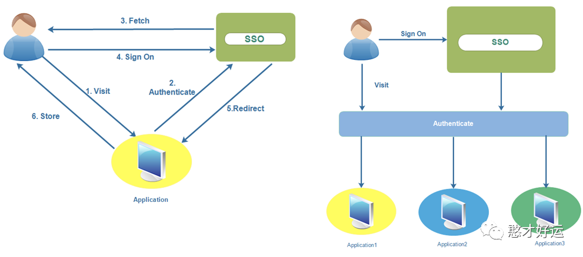
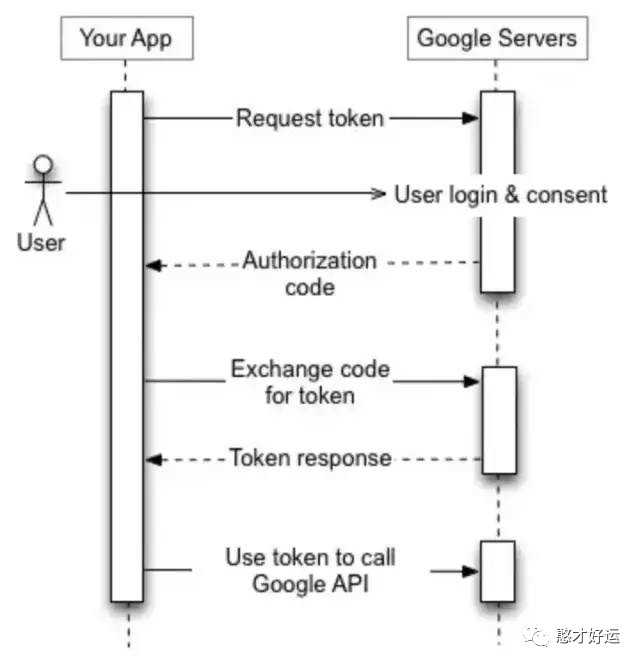
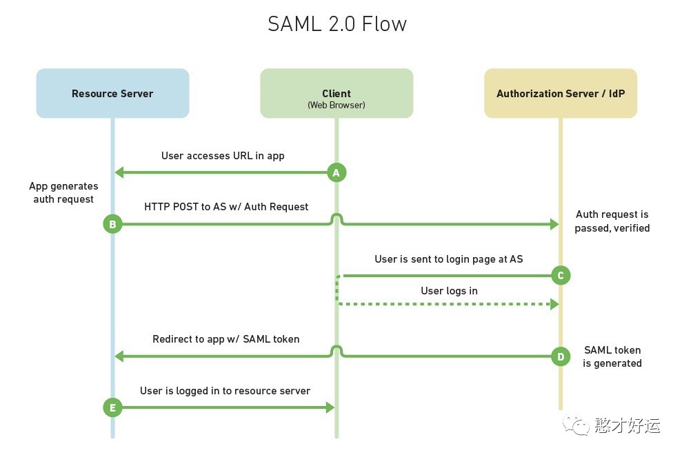
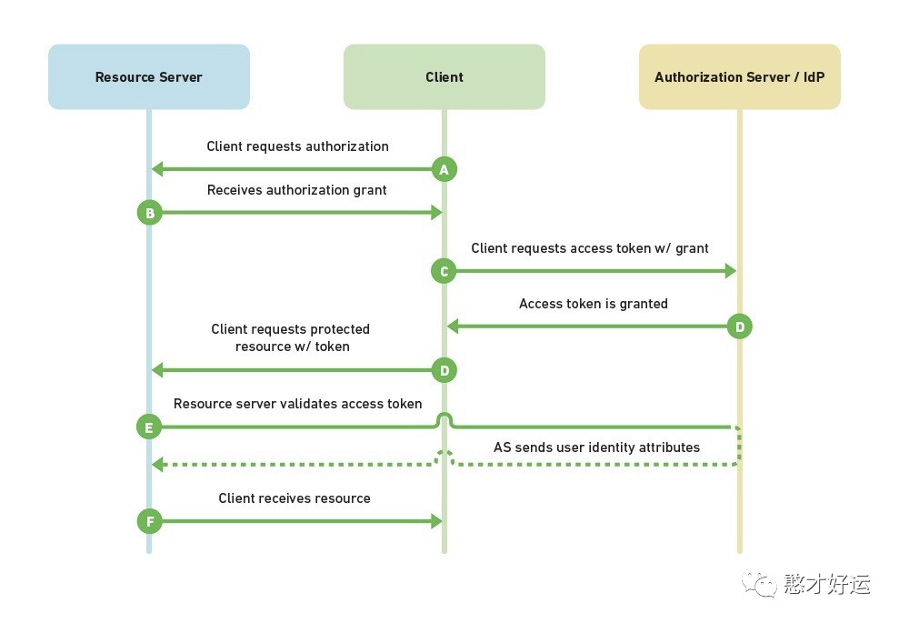
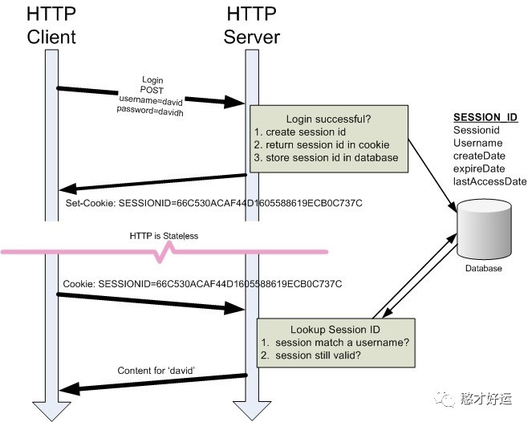

在进一步学习HTTP认证/授权方案时，我们会遇到很多名词术语，比如什么是SSO，SSO下不同策略SAML和OAuth的不同，以及OAuth、OpenID和JWT的不同，更重要的是区分authentication(认证)和authorisation(授权)，Session和JWT在不同场景下管理方面的优势和劣势以及access token和refresh token的区别等等。通常为了弄清楚一个概念，我们需要掌握多个概念，本文通过对网上博客的整理，梳理一下这些概念的区别和联系，同时声明本篇文章并非原创。
SSO
单点登录(Single Sign On，SSO)是指多个应用系统中，只需要登录一次，即可同时以登录态共享企业对内对外所有相关又彼此独立的系统。如果每一个平台都实现自己的用户账户体系的话无疑是巨大的浪费，所以公司内部会有一套公用的用户体系，用户只要登录之后就能够访问所有系统，这就是单点登录。
漫谈单点登录(https://www.cnblogs.com/EzrealLiu/p/5559255.html)这篇博客中由简入繁层层推进讲解了不同系统不同域情况下单点登录的模型图和时序图，本文摘取了一张单点登录示意图，用户访问应用先经过单点登录系统认证之后才能重定向回来保存登录凭证。
SSO是一类解决方案的统称，而在具体的实施方面，我们有两种策略可供选择：
SAML 2.0
OAuth 2.0
在区分这两种授权方式有什么不同之前，先讲解几个共有的特性并且是相当重要的概念。
token
Token在计算机领域中有不同的定义，这里说的token是指访问资源的凭据。例如当你调用Google API时，需要带上有效的token来表明你请求的合法性，这个token是Goolgle给你的，这表明Google给你的授权使得你有能力访问API对应的资源。
请求API时携带token的方式也是有很多种，通过HTTP Header或者url参数或者使用Google提供的类库都可以：
1 | 第一种：HTTP Header |
access token VS refresh token
更具体的说，上面调用API的token，一般称为access token，通常access token是有有效期限的，如果过期就需要重新获取，那么如何重新获取呢？
首先需要向Google API注册一个应用程序，注册完毕之后就会得到认证信息(credentials)包括client_id和client_secret，并非所有的程序都有client_secret；
接下来就要向Google请求access token，这里先忽略掉一些细节，例如请求参数(当然需要上面申请到的client_secret参数)。更重要的是，如果想访问的是用户资料，这里就会提醒用户进行授权；
如果用户授权完毕，Google就会返回acess token，又或是返回授权码(authorization code)再通过代码取得access token，通过access token就可以访问api对应的资源；
上一步通过authorization code兑换access token的过程中，Google不会仅仅返回access token，还会返回额外的信息，其中与之后更新相关的就是refresh token；
一旦access token过期，就可以通过refresh token再次请求access token，以上只是大致的流程。当然更新access token也可以不需要refresh token，这取决于请求方式和访问的资源类型。那如果refresh token也过期了怎么办？这时候就需要用户重新登录授权。为什么需要区分access token和refersh token呢？合并成一个token然后把过期时间调整的很长，并且每次失效之后用户重新登录授权就可以了。这里这样分开是为了职责分离，refresh token负责身份认证，而access token负责请求资源。
四个重要的角色
Client：客户端，指需要获取用户资源的第三方应用；
Resource Owner：资源所有者，通常指用户；
Authorization Server/Identity Provider(IDP)：授权服务器，用于验证资源所有者，并在验证成功之后向客户端发放相关令牌；
Service Provider(SP)/Resource Server：资源服务器，指存放用户受保护资源的服务器，通常需要access token(访问令牌)才能进行访问；
Authentication VS Authorisation
Authentication：身份鉴别/认证，简称认证；
Authorisation：资源访问权限，简称授权；
认证的作用在于认可你能够访问系统，用户鉴别访问者是否是合法用户；而授权用于决定有能访问哪些资源的权限。
大多数人不会区分这两者的区别，因为站在用户立场上，而作为系统设计者来说，这两者是有差别的。以通俗的例子来理解两者的区别，比如现在我要登录淘宝买东西，而如果我没有淘宝的账号，我也可以用微博的账号登录，这个微博账号就是第三方账号了。验证就是说“我”是不是(微博用户)，而授权是说“淘宝”可不可以，而可不可以的前提则是“我”是不是。
我点开微博登录的链接，淘宝就跳到微博登录页面，问我你是不是那个微博用户，是的话你用你的账号密码去登录，你先去给微博验明正身，成功的话再来找我。好啦，我屁颠屁颠输入账号跟密码，如果可以登录说明我这个身份是对的，通过了微博的验证后微博就告诉淘宝说，没错没错，我家里确实有么这个家伙上面这些都是OpenID的责任，而且OpenID也只做这件事就是前面说的是不是。然后呢，淘宝就说好好，有你微博验证我放心，于是就让我通过了等等，这时淘宝只知道微博他们家有我存在，但是并不知道我在微博家里叫什么名，做过什么事，其实淘宝也不应该知道，对吧，要是知道我在微博家老是到处举报别人卖假货坑顾客什么的，那我让你进我大淘宝岂不是会坏了我的大事，你丫是来捣乱的吧(至于淘宝为什么会这么想，呵呵～你们懂的)。
所以，淘宝通常就会做一件事，什么事呢？这时就轮到OAuth出场了，淘宝在把我交给微博验明正身的时候其实还“忽悠”了我，明明只是验个身份，却问我要不要把我在微博家叫什么名做过什么事也告诉它(就是通常看到的几个打勾选项：允许访问我的昵称/允许访问我的头像等等)，淘宝说这样就可以为我提供更多的服务，什么服务呢？模凌两可，我呢看到有更多服务也没多想就打勾了，不要白不要是吧。这里就用到了OAuth，就是前面说的可不可以，这个要是真发现我在微博家干过的事，会不会把我加入重点监控对象，那就要看淘宝有多少节操了。其实现在很多的第三方登录都是这样，验证身份的同时顺便把你在其他地方的资料拿到手，名曰资料共享，其实共享一些非敏感信息倒也无妨，还可以免去了每去一个新网站都要填写一大堆重复资料的问题。但是我要吐槽的是，很多网站明明让我用第三方账号登录，你都OAuth了为什么登录后还要再填一遍邮箱昵称之类的东西？早知道这样我还不如直接在你这边注册就好了，在我看来这是用户体验的问题了。
SAML 2.0
还未登陆的用户打开浏览器访问你的网站（SP，以下都简称 SP），网站提供服务但是并不负责用户认证；
于是 SP 向 IdP 发送了一个 SAML 认证请求，同时 SP 将用户浏览器重定向到 IdP ；
IdP 在验证完来自 SAML 的请求无误之后，在浏览器中呈现登陆表单让用户进行填写用户名和密码进行登陆；
一旦用户登陆成功，IdP 会生成一个包含用户信息（用户名或者密码）的 SAML token （SAML token 又称为 SAML Assertion，本质上是 XML 节点），IdP 向 SP 返回 token, 并且将用户重定向到 SP (token 的返回是在重定向步骤中实现的，下面会详细说明)；
SP 对拿到的 token 进行验证，并从中解析出用户信息，例如他们是谁以及他们的权限有哪些。此时就能够根据这些信息允许用户访问我们网站的内容了；
当用户在 IdP 登陆成功之后，IdP 需要将用户再次重定向至 SP 站点，这一步通常有两个办法：
HTTP 重定向（HTTP Redirect）：这并不推荐，应为重定向的 URL 长度有限，无法携带更长的信息，比如 SMAL Token；
HTTP POST 请求：这个是更常规的做法，当用户登陆完毕之后渲染出一个表单，用户点击后向 SP 提交 POST 请求。又或者可以使用 Javascript 向 SP 发出一个 POST 请求；
如果你的应用是基于 web，那么以上的方案没有任何问题。但如果你开发的是一个 iOS 或者 Android 的手机应用，那么问题就来了：
用户在 iPhone 上打开应用，此时用户需要通过 IdP 进行认证；
应用跳转至 Safari 浏览器，在登陆认证完毕之后，需要通过 HTTP POST 的形式将 token 返回至手机应用；
虽然 POST 的 url 可以拉起应用，但是手机应用无法解析 POST 的内容，我们也就无法读取 SAML Token。
当然还是有办法的，比如在 IdP 授权阶段不跳转至系统的 Safari 浏览器，在内嵌的 webview 中解决，在想方设法从 webview 中提取 token，或者利用代理服务器。但无论如何，SAML 2.0 并不适用于当下跨平台的场景，这也许与它产生的年代也有关系，它诞生于 2005 年，在那个时刻 HTTP POST 确实是最好的选择方案。
OAuth 2.0
用户通过客户端（可以是浏览器也可以是手机应用）想要访问 SP 上的资源，但是 SP 告诉用户需要进行认证，将用户重定向至 IdP；
IdP 向用户询问 SP 是否可以访问用户信息，如果用户同意，IdP 向客户端返回 access code；
客户端拿 code 向 IdP 换 access token，并拿着 access token 向 SP 请求资源；
SP 接受到请求之后拿着附带 token 向 IdP 验证用户的身份；
那么 OAuth 是如何避免 SAML 流程下无法解析 POST 内容的信息的呢？用户从 IdP 返回客户端的方式是通过 URL 重定向，这里的 URL 允许自定义schema，所以即使在手机上也能拉起应用；另一方面因为 IdP 向客户端传递的是 code，而不是 XML 信息，所以 code 可以很轻易的附着在重定向 URL 上进行传递。
但以上的 SSO 流程体现不出 OAuth 的本意，OAuth 的本意是一个应用允许另一个应用在用户授权的情况下访问自己的数据，OAuth 的设计本意更倾向于授权而非认证（当然授权用户信息就间接实现了认证）, 虽然 Google 的 OAuth 2.0 API 同时支持授权和认证。所以你在使用 Facebook 或者 Gmail 账号登陆第三方站点时，会出授权对话框告诉你第三方站点可以访问你的哪些信息，需要征得你的同意。
OpenID 2.0
OpenID Connect(OIDC)是基于OAuth 2.0规范族的可互操作的身份验证协议，它是使用简单的Rest/JSON消息流来实现，用于应用连接到IDP获取用户信息，并将这些信息以安全可靠的方法返回给应用。最初OpenID 1.0/2.0经常和OAuth协议一起提及，所以二者经常被搞混。
OpenID是Authentication，即认证。对用户身份进行认证，判断其身份是否有效，也就是让网站知道“你就是你声称的那个用户";
OAuth是Authorization，即授权。在已知用户身份合法的情况下，经用户授权来允许某些操作，也就是让网站知道"你能被允许做那些事情"
OpenID Connect是“认证”和“授权”的结合，因为其基于OAuth协议，所以OpenID Connect协议中也包含了client_id、client_secret还有redirect_uri等字段标识。OpenID Connect是OpenID的第三代技术，目的是让更多的开发者使用，并扩大其使用范围。
JWT
本质上来说 JWT 也是 token，正如在上文提到的，它是访问资源的凭证。Google 的一些 API 诸如 Prediction API 或者 Google Cloud Storage，是不需要访问用户的个人数据的。因而不需要经过用户的授权这一步骤，应用程序可以直接访问。就像上面 OAuth 中没有Client 参与的流程类似。这就要借助 JWT完成访问了, 具体流程如下：
首先需要在 Google API 上创建一个服务账号(service account)；
获取服务账号的认证信息(credential)包括 邮箱地址，client ID，以及一对公钥/私钥；
使用 Client ID和私钥创建一个签名的JWT，然后将这个JWT发送给 Google交换 access token；
Google 返回 access token；
程序通过 access token 访问 API；
甚至也可以不需要向 Google 索要access token，而是携带 JWT 作为 HTTP Header 里的 bearer token 直接访问 API 也是可以的。这才是 JWT 的最大魅力。
JWT 顾名思义，它是 JSON 结构的 token，由三部分组成：
-
header
-
payload
-
signature
1 | // header |
如果上述描述还不直观，用 伪代码 表示就是：
1 | // Signature algorithm |
可以在 jwt.io 上验证这个结果，JWT 的目的不是为了隐藏或者保密数据，而是为了确保数据确实来自被授权的人创建的，以防止中途篡改。
回想一下，当你拿到 JWT 时候，你完全可以在没有 secret 的情况下解码出 header和 payload，因为 header 和 payload 只是经过了 base64 编码(encode)而已，编码的目的在于有利于数据结构的传输。
虽然创建 signature 的过程近似于加密 (encrypt)，但本质其实是一种签名(sign) 的行为，用于保证数据的完整性，实际上也并且并没有加密任何数据。
接下来在 API 调用中就可以附上 JWT(通常是在 HTTP Header 中)。又因为 SP 会与程序共享一个secret，所以程序可以通过header提供的相同的 hash 算法来验证签名是否正确，从而判断应用是否有权力调用 API。
Session
因为 HTTP 是无状态的，所以客户端和服务端需要解决的如何让之间的对话变得有状态。例如只有是登陆状态的用户才有权限调用某些接口，那么在用户登陆之后，需要记住该用户是已经登陆的状态，常见的方法是使用 session 机制。
用户在浏览器登陆之后，服务端为用户生成唯一的 session id，存储在服务端的存储服务(例如 MySql, Redis)中；
该 session id 也同时返回给浏览器，以 SESSION_ID 为 KEY 存储在浏览器的 cookie 中；
如果用户再次访问该网站，cookie 里的 SESSION_ID 会随着请求一同发往服务端；
服务端通过判断 SESSION_ID 是否已经在 Redis 中判断用户是否处于登陆状态；
理论上来说，JWT 机制可以取代 session 机制。用户不需要提前进行登陆，后端也不需要 Redis 记录用户的登陆信息。客户端的本地保存一份合法的 JWT, 当用户需要调用接口时，附带上该合法的 JWT，每一次调用接口，后端都使用请求中附带的 JWT 做一次合法性的验证。这样也间接达到了认证用户的目的。然而 JWT 真的能取代 session 机制吗？
Session VS JWT
首先说明一下，JWT 有两种：
无状态的 JWT，token 中包含 session 数据。
有状态的 JWT，token 中仅有 session ID，session 数据还是存储在服务端。
本文讨论的是"无状态的 JWT"，就是把用户的 session数据放到 token 中，JWT不适合作为session机制，下面分别分析WT的优点和缺点：
JWT的优点：
易于水平扩展：把session数据放入JWT中，服务器不需要保存session信息，那么服务端就是无状态的，可以随意扩展。其实服务端保存session没有任何难度，没有必要在客户端token中保存session；
简单易用：看似token比较简单但是需要管理session，并没有比开箱即用的cookies更简单；
内置过期功能：是否过期应该是由服务端控制，不应该交给客户端控制；
用户阻止了cookies后还可以工作：不幸的是，在用户阻止了cookies的场景中，通常不仅仅是阻止了cookies，而是阻止所有本地存储，比如Local Storage，这样JWT也同样无法工作；
JWT的缺点：
体积大：如果把session信息编码后放入token中，体积会很大，有可能超过cookies的大小限制，那就只能把JWT保存在Local Storage中，也就会产生安全问题；
无法使某个JWT失效：不像session可以在服务端使其失效，而JWT直到其过期才能失效。比如服务端检测到一个安全威胁，也无法使其相关的JWT失效；
session数据旧了：session数据是保存在JWT中，其中会有用户的相关信息，例如角色。在JWT过期之前，用户的角色发生了变化，那么这时JWT中的信息就是旧了，也无法更新。
所以，JWT 真的不适合当做 session 使用，JWT 更适合一次性的命令认证，设置一个很短的有效期。
参考链接
不要用JWT替代session管理（上）：全面了解Token,JWT,OAuth,SAML,SSO
关注【憨才好运】微信公众号，了解更多精彩内容⬇️⬇️⬇️